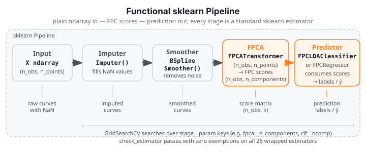

scikit-learn API¶
fdars.sklearn wraps functional-data methods as standard scikit-learn estimators
so they compose directly in Pipeline, GridSearchCV, and cross_val_score —
no fdars-specific glue code required. Every wrapped estimator passes the full
check_estimator battery with zero exemptions.
What the Layer Is¶
fdars.sklearn is a thin compatibility layer that exposes fdars functional-data
methods as scikit-learn-conforming estimators with the standard fit / transform
/ predict interface. This means:
- Pipelines just work — chain an
Imputer, aBSplineSmoother, anFPCATransformer, and anFPCLDAClassifierin a singlePipeline(...)call. - Grid search just works —
GridSearchCVcan search over smoothing bandwidth, number of FPC components, and classifier hyperparameters simultaneously. - Cross-validation just works —
cross_val_scoretreats the pipeline as a black box and handles train/test splits internally. - Native sklearn estimators compose freely — the
FPCATransformeroutput (an(n_obs, n_components)score matrix) feeds directly into any sklearn classifier or regressor without adaptation.
Plain-ndarray Contract¶
Every estimator in fdars.sklearn operates on plain NumPy arrays:
| Parameter | Shape | Meaning |
|---|---|---|
X (fit / transform / predict) |
(n_obs, n_points) |
Functional data matrix — each row is one observed curve |
argvals (constructor param) |
(n_points,) |
Evaluation grid; default np.arange(n_features) |
y (classifiers / regressors) |
(n_obs,) |
Labels or scalar targets |
argvals is passed to the estimator constructor, not to fit — this keeps the
sklearn-required signature fit(X, y=None) clean and makes pipelines work
without wrapping. Internally, estimators call fdars._native.* directly
and never construct an Fdata object — keeping the boundary clean and
avoiding dtype side-effects that would break the check_estimator battery.
Installation¶
Optional extra
fdars.sklearn is an optional extra. The base fdars package imports with
scikit-learn entirely absent — the subpackage gates itself in its own
__init__.py, mirroring the advisor and mcp pattern. Only install the
extra when you need the sklearn layer.
This pulls in scikit-learn>=1.3 alongside the compiled fdars extension. The
[sklearn] extra is compatible with Python 3.9 – 3.14 and the full sklearn 1.3 –
1.8 release line.
Full check_estimator Compliance¶
Every wrapped estimator in fdars.sklearn passes the complete
parametrize_with_checks battery (sklearn's internal check_estimator suite)
with zero exemptions — no expected_failed_checks, no _xfail_checks. This
is an unconditional guarantee, not a best-effort target.
The compliance rule is strict: if a functional-data method cannot satisfy the full battery, it is excluded from the sklearn layer and stays in the functional API — it is never wrapped with exemptions. Every excluded method is reason-coded and documented on the coverage / EXCLUDE list (added in Plan 02).
Verified on: sklearn 1.8.0 / Python 3.14 — 28 estimators, 1 379 checks total.
Pipeline Data Flow¶

Five Estimator Families¶
fdars.sklearn organises its 28 wrapped estimators into five scikit-learn
families, each of which composes naturally into a Pipeline:
Transformers¶
TransformerMixin estimators that map (n_obs, n_points) → (n_obs, n_out).
Place these in the early stages of a Pipeline to preprocess raw curves before a
downstream predictor.
| Estimator | What it does |
|---|---|
Imputer |
Linear-interpolation imputation of NaN values in the curve matrix |
BSplineSmoother |
Per-curve B-spline / Nadaraya-Watson smoothing (removes measurement noise) |
LocalPolynomialSmoother |
Per-curve local-polynomial kernel smoothing |
BasisRepresentation |
Projects curves onto a B-spline basis; returns expansion coefficients |
SplineInterpolator |
Resamples curves onto a new evaluation grid |
DepthTransformer |
Maps each curve to its modified-band-depth scalar (1D depth feature) |
FPCATransformer |
Functional PCA: maps (n_obs, n_points) → (n_obs, n_components) FPC scores |
ElasticFPCATransformer |
Elastic FPCA: amplitude/phase-aware FPC scores |
Pipeline role: Pipeline([("smoother", BSplineSmoother()), ("fpca", FPCATransformer()), ("clf", ...)]) — the transformer chain converts raw curves to FPC scores that feed a standard sklearn classifier.
Regressors¶
RegressorMixin estimators that predict a scalar y from functional X.
| Estimator | What it does |
|---|---|
FPCRegressor |
FPC regression: OLS on FPCA score matrix |
GLMRegressor |
Gaussian FPC-OLS regression (Gaussian GLM on FPC scores) |
KNNRegressor |
k-nearest-neighbour regression on functional curves |
NonparametricRegressor |
Nadaraya-Watson scalar prediction from functional X |
RobustFPCRegressor |
Robust FPC regression (resistant to curve outliers) |
Pipeline role: Pipeline([..., ("fpca", FPCATransformer(n_components=4)), ("reg", FPCRegressor(n_components=3))]) — regressors accept the (n_obs, n_components) score matrix from FPCATransformer directly.
Classifiers¶
ClassifierMixin estimators that predict class labels from functional X.
| Estimator | What it does |
|---|---|
FPCLDAClassifier |
LDA on FPC scores |
FPCQDAClassifier |
QDA on FPC scores |
FPCKNNClassifier |
k-NN classifier on FPC scores |
DDClassifier |
DD-plot classifier (depth vs depth) |
ElasticMultinomialClassifier |
Multinomial logistic via elastic FPCA + OvR |
Pipeline role: Pipeline([..., ("fpca", FPCATransformer()), ("clf", FPCLDAClassifier())]) — classifiers receive FPC score matrices or raw curve matrices and output class labels.
Clusterers¶
ClusterMixin estimators (unsupervised).
| Estimator | What it does |
|---|---|
FunctionalKMeans |
k-means on functional curves (fdars-native distance) |
FunctionalGMM |
Gaussian mixture model on functional data |
FunctionalFuzzyCMeans |
Fuzzy c-means on functional curves |
Pipeline role: Typically used standalone or as the final stage of a preprocessing pipeline; fit_predict returns integer cluster labels.
Outlier Detectors¶
OutlierMixin estimators that label observations as inliers (+1) or outliers (−1).
| Estimator | What it does |
|---|---|
MagnitudeShapeDetector |
MS-plot detector: separate magnitude and shape outlyingness |
LRTDetector |
Likelihood-ratio test detector |
OutliergamDetector |
Outliergram detector |
TVDMSSDetector |
TVDMSS detector |
MUODDetector |
MUOD detector |
DepthgramDetector |
Depthgram detector |
Scoring honesty
MagnitudeShapeDetector uses a method-faithful MS-plot score (joint magnitude /
shape outlyingness from fdars.outliers.magnitude_shape). The other five detectors
rank by a subset-invariant modified-band-depth surrogate in the sklearn layer
— their true batch-relative methods remain in fdars.outliers and are available
there. The sklearn wrappers are designed to pass check_estimator's
check_methods_subset_invariance test; use fdars.outliers directly when you
need the exact batch-relative scores.
Worked Example: Pipeline¶
The fence below builds a four-stage classification pipeline, fits it on a small synthetic dataset (40 curves × 20 points, two Gaussian-shifted classes), and plots the FPCA score space coloured by predicted class label.
import numpy as np
from docs_fig import fig, render
from fdars.sklearn._skeletons import (
BSplineSmoother,
FPCATransformer,
FPCLDAClassifier,
Imputer,
)
from sklearn.pipeline import Pipeline
# --- Synthetic dataset: 40 obs × 20 points, two separable classes --------
rng = np.random.default_rng(7)
half = 20
t = np.linspace(0, 1, 20)
X0 = rng.standard_normal((half, 20)) # class 0: baseline
X1 = rng.standard_normal((half, 20)) + 3.0 # class 1: mean-shifted +3
X = np.vstack([X0, X1])
y = np.array([0] * half + [1] * half, dtype=int)
# Inject sparse NaN so the Imputer stage does real work
X_nan = X.copy()
X_nan[::5, 2::7] = np.nan
# --- Four-stage Pipeline -------------------------------------------------
pipe = Pipeline([
("imputer", Imputer()),
("smoother", BSplineSmoother()),
("fpca", FPCATransformer(n_components=3)),
("clf", FPCLDAClassifier()),
])
pipe.fit(X_nan, y)
y_pred = pipe.predict(X_nan)
# --- Visualise FPC scores coloured by predicted class --------------------
# Extract scores via an intermediate transform call (up to the fpca step)
preproc = Pipeline([
("imputer", Imputer()),
("smoother", BSplineSmoother()),
("fpca", FPCATransformer(n_components=3)),
])
scores = preproc.fit_transform(X_nan)
f, (a0, a1) = fig(1, 2, figsize=(11, 4.5))
# Left: raw (NaN-injected) curves coloured by true class
colors = ["#1a73e8", "#d62728"]
for i in range(len(X_nan)):
a0.plot(t, X_nan[i], color=colors[y[i]], lw=0.9, alpha=0.55)
a0.set(title="Raw curves (NaN → imputed)", xlabel="t", ylabel="value")
for cls, lbl in [(0, "Class 0"), (1, "Class 1")]:
a0.plot([], [], color=colors[cls], lw=2, label=lbl)
a0.legend()
# Right: FPC score space (PC1 vs PC2) coloured by predicted class
for cls in (0, 1):
mask = y_pred == cls
a1.scatter(
scores[mask, 0], scores[mask, 1],
color=colors[cls], s=40, alpha=0.8,
label=f"Predicted class {cls}",
)
a1.set(title="FPC score space (PC1 vs PC2)", xlabel="FPC 1", ylabel="FPC 2")
a1.legend()
print(render(f))
print("Predicted labels:", set(y_pred.tolist()), " FDARS_FENCE_OK")